CONTROLAR.
PROTEGER.
Usuarios, privilegios, roles y vistas en MySQL
Control de acceso basado en mínimo privilegio, roles reutilizables y vistas que limitan la información expuesta.
Objetivo y entorno
Se utiliza la máquina Ubuntu de la Unidad 1, con acceso SSH como mcsadmin y administración local de MySQL mediante sudo mysql. Se crea una base independiente llamada academia_segura. Se conservarán los datos y cuentas para las siguientes tareas.
Actividad realizada paso a paso y finalizada por el alumno. Las quince capturas se guardan en media. Un rechazo de permisos puede ser el resultado correcto de una prueba.
Estado inicial de MySQL
Comprobar el servicio, la versión y el acceso administrativo.
systemctl is-active mysql
mysql --version
sudo mysql -e "SELECT VERSION(), CURRENT_USER();"
media/a04-01-estado-inicial.PNGResultado real: La captura muestra MySQL activo, versión 8.0.46-0ubuntu0.24.04.4 y acceso administrativo como root@localhost.
Base academia_segura y datos de prueba
Crear alumno, curso y matricula con sus claves y datos. Comprobar tres alumnos, dos cursos y tres matrículas.
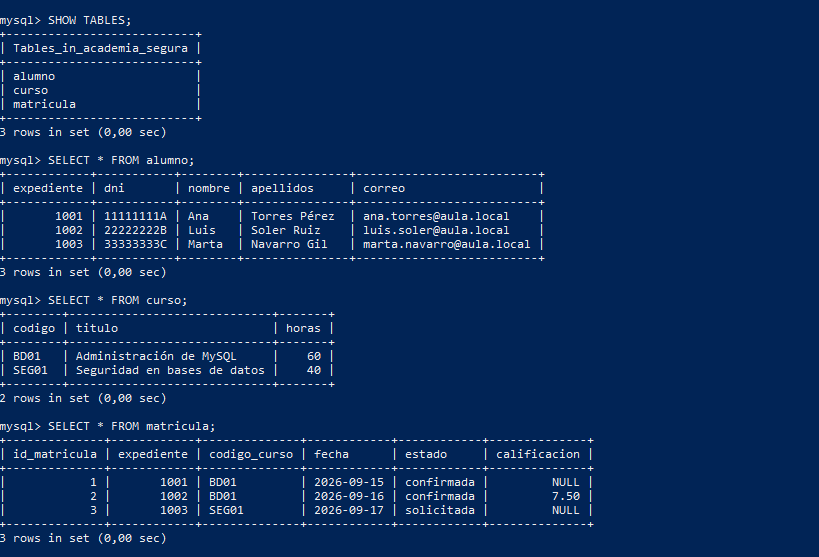
media/a04-02-base-datos.PNGResultado real: MySQL activo, versión 8.0.46 y acceso administrativo como root@localhost.
Cuentas y bloqueo
Crear secretaria1, profesor1 y consulta1. Probar el bloqueo y desbloqueo de consulta1.
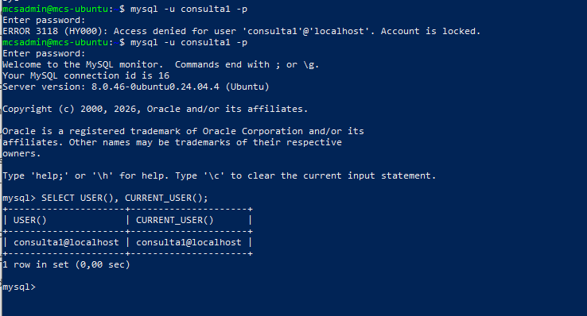
media/a04-03-cuentas-bloqueo.PNGResultado real: El alumno confirma la creación de las tres tablas y la carga de los datos de prueba.
Privilegios de secretaría
Conceder SELECT en alumno y SELECT, INSERT y UPDATE en matricula. Mostrar los permisos.
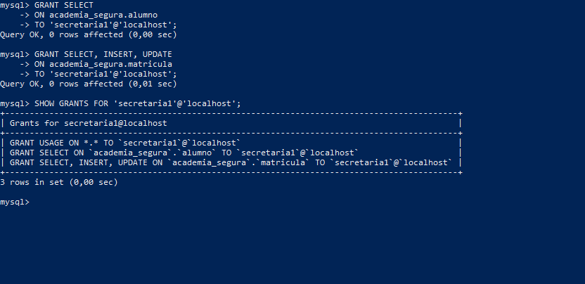
media/a04-04-secretaria-permisos.PNGResultado real: La cuenta consulta1 fue rechazada mientras estaba bloqueada y pudo acceder tras desbloquearla.
Pruebas de secretaría
Comprobar consultas y modificación autorizadas, y rechazo de DELETE en matricula y UPDATE en alumno.
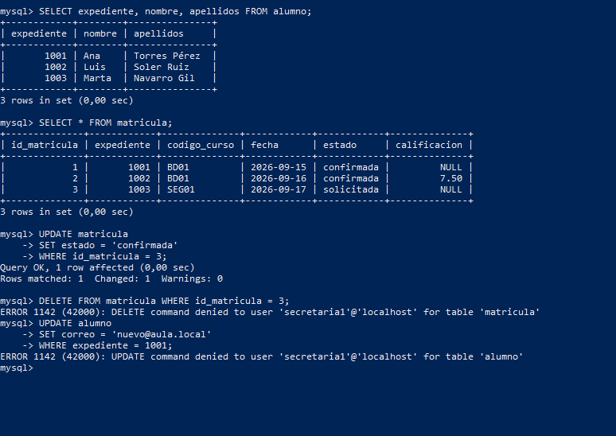
media/a04-05-secretaria-pruebas.PNGResultado real: La salida aportada confirma SELECT sobre alumno y SELECT, INSERT y UPDATE sobre matricula.
Revocación y restitución
Revocar UPDATE en matricula, comprobar su rechazo y volver a concederlo.
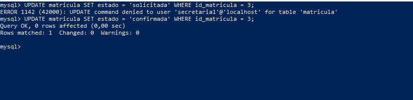
media/a04-06-revocacion.PNGResultado real: Se consultaron los datos y se confirmó el cambio de estado de la matrícula 3. Se continuó tras realizar las pruebas de denegación.
Rol del profesorado
Crear rol_profesorado con SELECT en curso y matricula y UPDATE únicamente sobre calificacion. Asignarlo y activarlo por defecto.
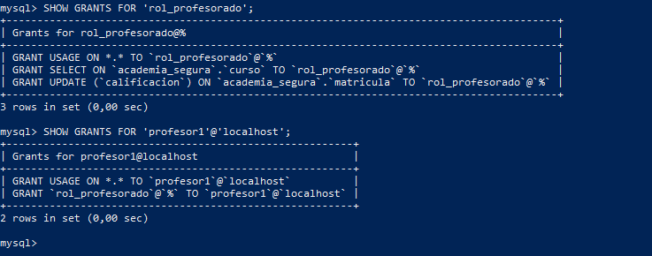
media/a04-07-rol-profesorado.PNGResultado real: Se repitió la prueba tras corregir una entrada accidental /!clear. Se retiró y restituyó UPDATE; el alumno continuó tras la repetición.
Pruebas del profesorado
Comprobar el rol activo, la consulta y modificación de calificacion. Comprobar el rechazo del cambio de estado y de DELETE en curso.
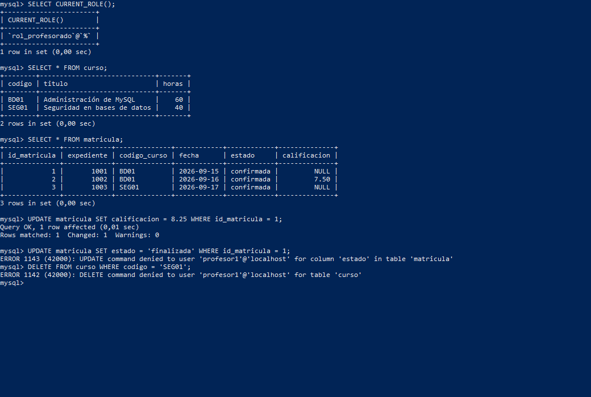
media/a04-08-profesor-pruebas.PNGResultado real: Se detectó que faltaba SELECT sobre matricula en el rol. Se concedió ese permiso y se renovó la sesión del profesor. La captura de revisión confirma los privilegios corregidos.
Vista y permisos de consulta
Crear vista_alumnado_cursos con SQL SECURITY DEFINER y conceder a consulta1 SELECT solo sobre la vista.
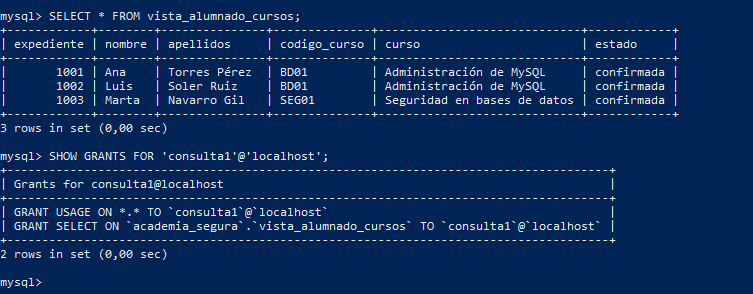
media/a04-09-vista-consulta.PNGResultado real: Se repitieron las pruebas con el rol corregido: lectura, modificación de calificacion y rechazo de cambios no autorizados.
Pruebas de consulta1
Consultar la vista y comprobar el rechazo de acceso directo a alumno y matricula.
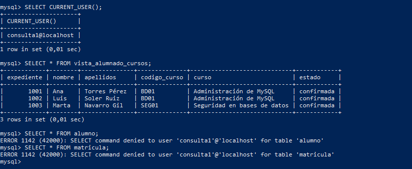
media/a04-10-consulta-pruebas.PNGResultado real: Se creó la vista y se concedió SELECT sobre ella a consulta1.
Revisión de cuentas y privilegios
Revisar cuentas, bloqueo y permisos de usuarios y rol. Responder las cinco preguntas.
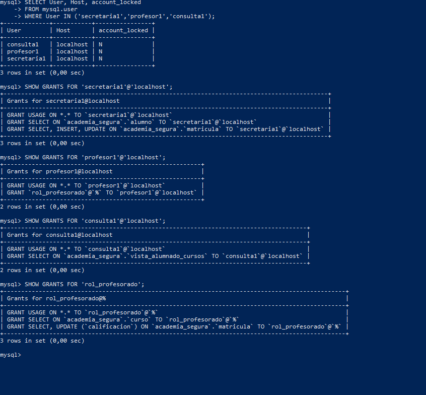
media/a04-11-revision-cuentas.PNGResultado real: El alumno continuó tras consultar la vista y probar el rechazo de acceso directo a las tablas.
Actividad final: cuenta, rol y vista
Crear orientacion1, rol_orientacion y vista_orientacion con expediente, nombre, apellidos, título del curso y estado. Conceder SELECT de la vista al rol y asignar el rol por defecto a la cuenta.
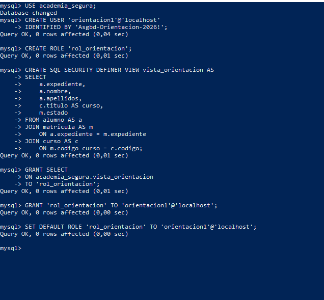
media/a04-12-orientacion-configuracion.PNGResultado real: La captura revisada muestra las tres cuentas desbloqueadas y los privilegios correctos de secretaría, profesor, consulta y rol.
Actividad final: permisos y rol activo
Mostrar los permisos del rol, su asignación y CURRENT_ROLE() en la sesión de orientacion1. No conceder permisos directos sobre objetos a esta cuenta.
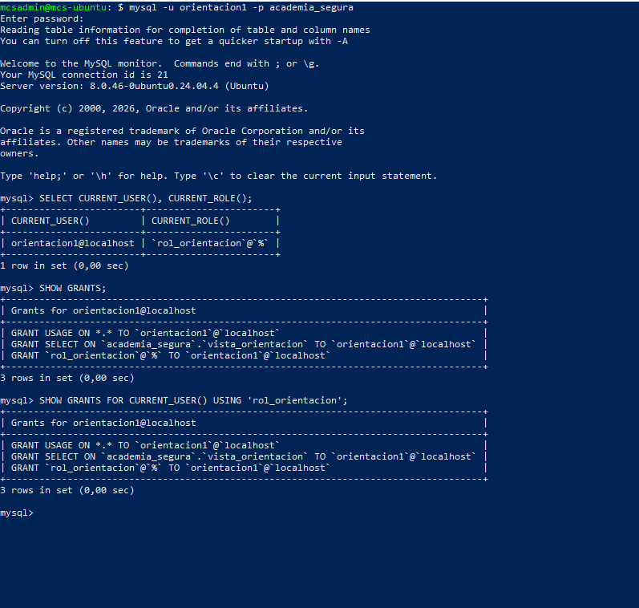
media/a04-13-orientacion-privilegios.PNGResultado real: Se crearon orientacion1, rol_orientacion y vista_orientacion, asignando el rol por defecto.
Actividad final: consulta permitida
Consultar vista_orientacion como orientacion1 y mostrar los campos autorizados.
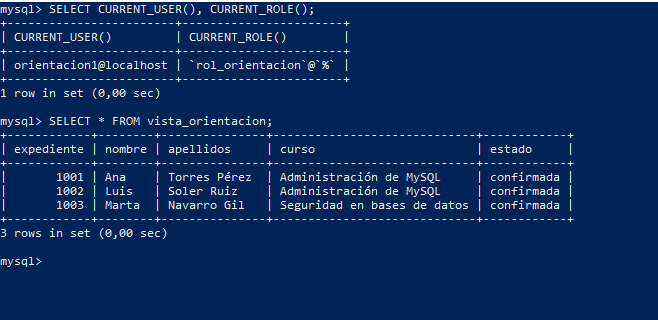
media/a04-14-orientacion-permitido.PNGResultado real: Se comprobó la identidad, el rol activo y los permisos efectivos de orientación.
Actividad final: accesos rechazados
Como orientacion1, comprobar que SELECT sobre alumno y matricula se rechaza. No eliminar la base ni las cuentas al terminar.
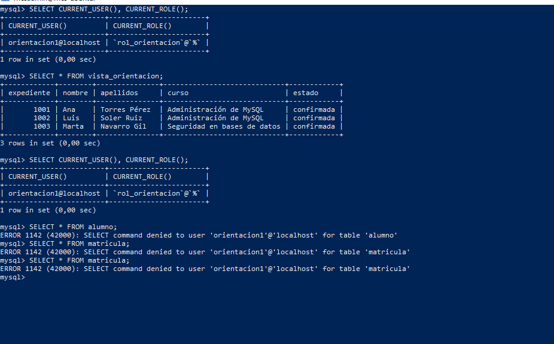
media/a04-15-orientacion-denegados.PNGResultado real: Se consultó la vista con los campos autorizados, sin DNI, correo ni calificación.
Preguntas de revisión
¿Por qué secretaria1 no necesita DELETE?
Su función es consultar alumnado y gestionar matrículas sin eliminarlas. Conceder DELETE excedería las tareas autorizadas.
¿Qué ventaja aporta rol_profesorado?
Agrupa permisos reutilizables y permite asignarlos y mantenerlos de forma coherente para varias cuentas.
¿Qué datos oculta la vista?
La vista del tutorial excluye DNI, correo y calificación. Expone solo los campos necesarios para consulta.
¿Por qué consulta1 no debe acceder a alumno?
La tabla contiene datos sensibles que no necesita para su función. El acceso se limita a la vista.
¿Qué demuestra una operación rechazada correctamente?
Que el control de acceso está aplicando la restricción esperada, siempre que la prueba se realice con la cuenta y sesión correctas.
EXAM MODE
| Concepto | Qué recordar |
|---|---|
| Cuenta MySQL | Se identifica por usuario y host: la cuenta MySQL es independiente del usuario de Ubuntu. |
| Mínimo privilegio | Conceder solo las operaciones y el alcance necesarios: base, tabla, columna o vista. |
| GRANT y REVOKE | Conceden y retiran privilegios. SHOW GRANTS permite revisar la configuración. |
| ACCOUNT LOCK / UNLOCK | Bloquean y desbloquean el acceso de la cuenta sin borrarla. |
| Roles | Agrupan privilegios. Asignar un rol no implica que esté activo en todas las sesiones: configurar el rol predeterminado y comprobar CURRENT_ROLE(). |
| UPDATE por columna | UPDATE (calificacion) limita la modificación a esa columna; no permite modificar estado. |
| Vista con SQL SECURITY DEFINER | Permite exponer los campos seleccionados utilizando los privilegios del definidor para los objetos subyacentes. La cuenta consumidora necesita SELECT en la vista. |
| Pruebas positivas y negativas | Probar tanto operaciones permitidas como denegadas con la cuenta real. Las pruebas de privilegios no se hacen como root. |
| Privilegios efectivos | Revisar permisos directos y roles: un permiso excesivo por otra vía puede invalidar la restricción deseada. |
Resultado y entrega
Actividad completada con quince evidencias y las preguntas de revisión respondidas. La entrega solicitada incluye las cinco respuestas y la actividad final, con comandos y salidas de las pruebas de orientacion1. Nombre del PDF: ASGBD_T2_Tutorial1_Apellidos_Nombre.pdf.
Tiempo de realización
Tiempo real de realización: 54 minutos, de 16:26 a 17:20, según el horario indicado por el alumno. Estimación inicial: 90–120 minutos.
Repaso: cómo protegemos los datos
Los datos completos permanecen en las tablas. vista_orientacion une alumno, matricula y curso y expone solo expediente, nombre, apellidos, título del curso y estado. No elimina datos: limita los campos que se pueden consultar a través de ella.
orientacion1 recibe rol_orientacion, y este rol tiene únicamente SELECT sobre la vista. La cuenta no recibe acceso a las tablas originales ni permisos para modificar datos. SQL SECURITY DEFINER permite resolver la consulta subyacente con los privilegios del definidor de la vista.
Para el examen: la vista limita la información expuesta; SELECT limita la operación; el rol agrupa el permiso. Esto aplica el principio de mínimo privilegio.